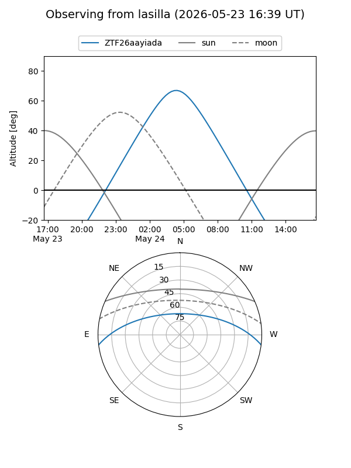
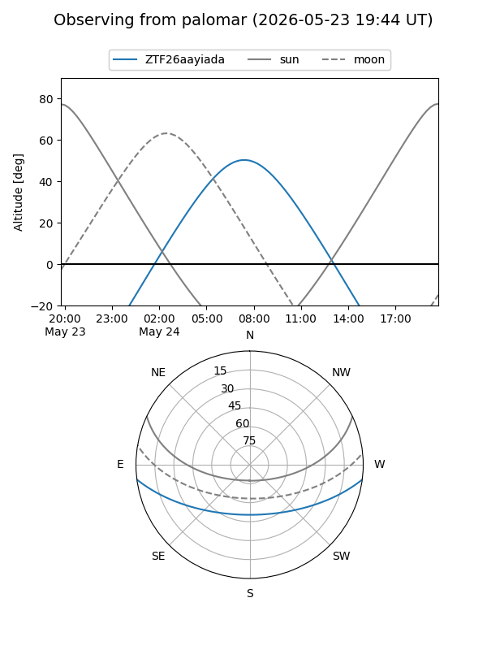

ZTF26aayiada
Target ZTF26aayiada at 2026-05-24 06:52
Aliases and brokers:
lsst-FINK: link
lsst-Lasair: link
lsst-ALeRCE: link
ztf-FINK: link
ztf-Lasair: link
ztf-ALeRCE: link
alt names
ZTF26aayiada (ztf,fink_ztf)
Coordinates:
equatorial (ra, dec) = 235.6539,-6.17142
equatorial (HMS+DMS) = 15:42:36.94,-06:10:17.10
galactic (l, b) = (0.5504,+36.88888)
Flags:
Photometry:
last ztfg=18.91
1 ztfg detections
Lightcurve
Visibility


Additional plots